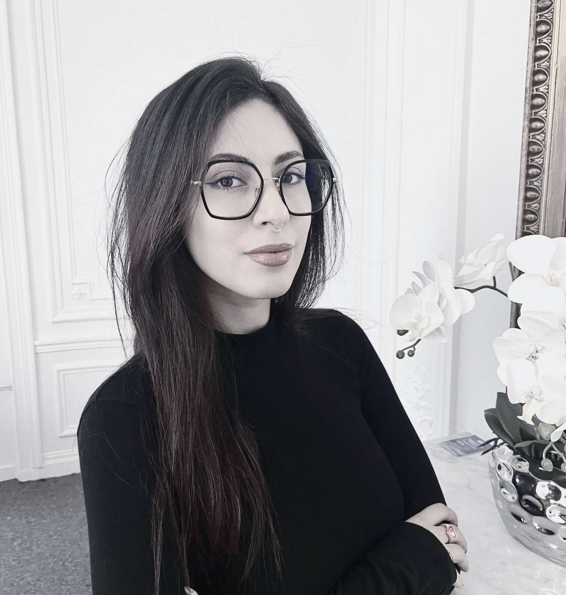

Oumaima Rouissi
Mon Portfolio
.png)
Oumaima Rouissi
Mon Portfolio
A Propos de Moi
2020-2022
2021-2022
2022-2023
2023-Présent
Ce portfolio présente les projets que j’ai réalisés durant mes études, qui sont chers à mon cœur et qui m’ont permis de découvrir ma passion pour le digital dans son ensemble, ainsi que pour les secteurs du luxe, de l’art, de la mode et de la cosmétique. Il inclut également les projets qui m’ont particulièrement inspirée, où j’ai pu proposer des idées créatives.
Ce portfolio vous permet d’en savoir plus sur mon identité, ma vision, mes ambitions et mes passions.
N’hésitez pas à explorer !
 - Modifié.png)
 - Modifié.png)
 - Modifié.png)
 - Modifié.png)
 - Modifié.png)
 - Modifié.png)
Allier créativité et réflexion stratégique pour concevoir des projets qui marient originalité et performance. Rigoureuse, organisée et passionnée, je souhaite contribuer activement à des projets innovants tout en continuant à apprendre et à enrichir mes compétences dans le domaine de la communication digitale et du marketing.
Mon objectif est de développer mon expertise en gestion de projet et stratégie digitale, tout en approfondissant mes compétences créatives. À terme, je souhaite évoluer vers des postes de responsabilité, tels que manager d’équipe ou directeur artistique, afin de piloter des projets d’envergure et inspirer des équipes dans un environnement dynamique et collaboratif.
Mes Compétences
Stratégie Marketing
Elaboration de plan marketing selon les objectifs
Analyse du marché
Positionnement et renforcement d’identité de marque
Budgétisation et suivi des ROI
Communication Digitale
Conception de plan de communication
Conception de stratégie éditoriale et réseaux sociaux
Création de contenus SEO / SEA
Gestion de relation presse
Gestion de prestataires
Conception UX/UI Design
Création de wireframes et prototypes
Analyse des besoins et définition de parcours utilisateurs intuitifs
Optimisation d’interfaces et amélioration d’ergonomie
Veille sur les tendances
Outils de mesure d'audience
Prise de besoin et proposition de marquage
Intégration d’outils
Création de jeux de données et tableaux de bord pour le pilotage des résultats
Suivi et optimisation des campagnes marketing via les urls
Analyse de données et de KPIs
Proposition d’amélioration
Mes Projets
Inavino
Secteur du vin
Projet réalisé dans le cadre de ma 2ème année d’étude en master en 2022
-
Ce projet a été présenté à la marque et a été le seul à être retenu parmi tous les projets proposés
Sensibilisation à l’importance du vin bio et éthique en atelier pour les employés d’une entreprise.
Mastic
Secteur de la cosmétique pour hommes
Projet réalisé dans le cadre de ma 2ème année d’étude en master en 2022
-
La marque est une start-up de notre professeur Julien Giuseppe qui nous ademandé de lui proposé une stratégie de référencement pour booster le lancement de son application mobile.
NYX
Secteur de la cosmétique pour femmes
Projet réalisé dans le cadre de ma 2ème année d’étude en master en 2022
GRAFF AMENITIES
Secteur du luxe
Projet réalisé dans le cadre de ma 2ème année d’étude en master en 2022
-
-
La marque décide de développer une gamme d’amenities au moyen d’orient. Le principe est de proposer une stratégie de marketing et de communication pour gagner en visibilité sur le marché de l'hôtellerie.
JEDIA
Secteur de la mode éthnique
Projet réalisé dans le cadre de ma 2ème année d’étude en master en 2022
-
Il s'agit d'une marque ethnique qui venait d'être lancée et qui cherchait une identité pour s'approprier et atteindre son public cible.
Expositions de femmes artistes
Secteur de l'art
Mémoire de fin d'études réalisée dans le cadre de ma 2ème année d’étude en master en 2022
Teaser post-évènement (projet perso)
Exposition : Surréalisme - Centre Pompidou
Janvier 2025
Clients
Voici quelques logos de clients avec lesquels j’ai collaboré dans le cadre de mon expérience actuelle en tant que consultante en Digital Analytics. Les projets menés varient, allant de la création de plans de marquage pour le suivi des audiences sur sites web et applications mobiles, à l’intégration de la solution Piano Analytics, en passant par l’analyse de données et de KPIs, la conception de tableaux de bord, ainsi que la formation des équipes à l’utilisation de cette solution.
Contact
+33 (0)7 67 20 38 81
oumaymarouissi@gmail.com
https://www.linkedin.com/in/oumaima-rouissi-8b7641195/
Merci !